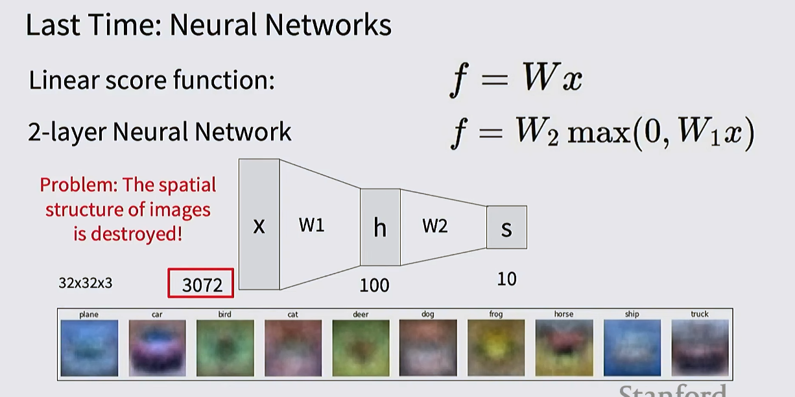

Teaching machines to interpret and understand images and video — from basic image classification to complex segmentation and 3D understanding. This topic synthesizes content from Stanford CS231N and Hugging Face applied examples.
Image classification assigns a single label from a fixed set of categories to an image (e.g., "cat" or "dog").
The core problem: an image is a tensor of integers between [0, 255]. A cat photo is stored as an 800 × 600 × 3 array of numbers — the computer sees nothing but those numbers. A human looking at the same photo instantly recognizes a cat. This gap between the human semantic understanding and the machine's pixel representation is the central challenge of computer vision.
The difficulty is not just "pixels are low-level." Even for the same object, almost every pixel can change under viewpoint shifts, lighting changes, background clutter, occlusion, or deformation. Humans treat those as nuisance factors; a vision model has to learn that invariance from data.
| Challenge | Description |
|---|---|
| Semantic gap | Humans understand meaning; machines see raw pixel values (an 800×600×3 tensor) |
| Viewpoint variation | Camera movement changes ALL pixels, even for the same object |
| Illumination | RGB pixel values are a function of surface material, color, AND light source |
| Background clutter | Other objects in the background make it harder to see the target object |
| Occlusion | Part of the object is hidden |
| Deformation | Object appears in unusual shapes or poses |
| Intra-class variation | Objects in the same category can look very different |
| Context | Surroundings influence how an object is recognized |
Detect edges → corners → combine into rules
Learn features automatically from labeled examples
Modern CNNs and ViTs are data-driven at scale
def train(images, labels):
# Machine learning!
return model
def predict(model, test_images):
# Use model to predict labels
return test_labelsUsed in K-Nearest Neighbors (KNN) classification for image comparison:
A linear classifier makes predictions using: f(x; W) = Wx + b
x = image flattened into a vector (e.g., 32×32×3 = 3072 numbers)W = weight matrix (learned parameters)b = bias vectorGeometric interpretation: each row of W acts as a class template; the dot product measures how similar the image is to that template.
Hard cases for linear classifiers: non-linear decision boundaries, circular data, multimodal class distributions — solved by stacking layers into neural networks.

Pixel-accurate object outlining without necessarily identifying the class (class-agnostic segmentation).
Zigeng/SlimSAM-uniform-77 (based on Segment Anything Model)Estimating the distance of objects in an image from the camera — common in autonomous driving and robotics.
Intel/dpt-hybrid-midas